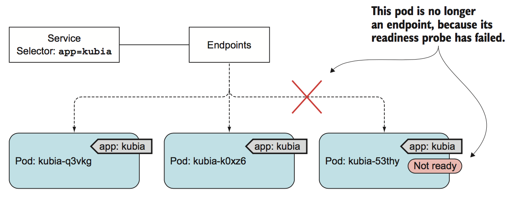

svc and readniss-probe
如果存量pod的标签与svc的标签选择器匹配， 那么pod就将作为服务的后端，并且如果新建pod的标签与svc的标签选择器匹配，它也会成为svc的一部分，开始接收流量。但是如果 pod 没有准备好的情况下，如何处理服务请求呢？
比如一个pod在启动的时候需要加载数据，也可能为了防止第一个用户请求时间太长，影响用户体验，然后就需要执行一段预热的时间，再或者说容器的IP没有加入到各种白名单系统。在这些情况下， 是不希望该pod 立即开始接收请求的， 直到pod完全准备就绪。那么我们需要什么手段来解决这个问题呢？
readniss-probe
readniss 探针我们在pod的生命周期中已经解释过了，关于探针的描述，可以回头看文档。这里只是想说明 readniss 探针对服务的影响； readniss 探针与 liveness 探针不同， 如果容器因为 readniss 探针探测失败的话，容器是不会被终止或重新启动的。而 liveness 探针会通过杀死异常容器并创建一个新的正常容器替代原pod， 而 readniss 探针确保只有准备好的，即可以处理请求的pod才会才加入到 endpoint 中，否则就从 endpoint 中移除，具体流程如下图所示： 
Create RC with readniss-probe
#kubia-rc-readinessprobe.yaml
apiVersion: v1
kind: ReplicationController
metadata:
name: kubia
spec:
replicas: 3
selector:
app: kubia
template:
metadata:
labels:
app: kubia
spec:
containers:
- name: kubia
image: luksa/kubia
imagePullPolicy: IfNotPresent
ports:
- name: http
containerPort: 8080
readinessProbe:
exec:
command:
- ls
- /var/ready
readniss探针会周期性执行，该探针的内容是探测一个文件是否存在，如果文件存在， ls命令返回退出码为0，否则返回非零的退出码。创建之后的效果如下：
# kubectl apply -f kubia-rc-readinessprobe.yaml
# kubectl get pod
kubia-6dcvk 0/1 Running 0 32s
kubia-6nf9j 0/1 Running 0 44s
kubia-f94fh 0/1 Running 0 38s
查看错误详情：
# kubectl describe pod kubia-6dcvk
Events:
Type Reason Age From Message
---- ------ ---- ---- -------
Warning Unhealthy 7s (x12 over 117s) kubelet, 192.168.10.242 Readiness probe failed: ls: cannot access /var/ready: No such file or directory
提示很明显， Readiness 探测失败，因为不存在 /var/ready 文件，修复该问题很简单，只需要创建个文件就好了,比如:
# kubectl exec kubia-6dcvk -- touch /var/ready
# kubectl get pod kubia-6dcvk -o wide
NAME READY STATUS RESTARTS AGE IP NODE NOMINATED NODE
kubia-6dcvk 1/1 Running 0 4m56s 172.30.14.14 192.168.10.242 <none>
Readiness 探针的默认探测周期是 10s，所以，创建完文件后，不会立马变成ready状态，
Create svc
此时，创建一个svc， 用来验证ready的pod：
#kubia-svc-nodeport.yaml
apiVersion: v1
kind: Service
metadata:
name: kubia-nodeport
spec:
type: NodePort
ports:
- port: 80
targetPort: 8080
nodePort: 30123
selector:
app: kubia
创建并检查：
# kubectl apply -f kubia-svc-nodeport.yaml
# kubectl get service kubia-nodeport
# kubectl get endpoints kubia-nodeport
NAME ENDPOINTS AGE
kubia-nodeport 172.30.14.14:8080 7d1h
根据pod的IP进行核对， 是上面刚ready的pod，下面进行测试，在node执行：
# curl 10.254.129.235
You've hit kubia-lk846
# curl 10.254.129.235
You've hit kubia-lk846
此时可以再修复一个pod测试，直到把pod都修复完成；然后再把文件删除进行逆向测试；
定义探针的必要性
如果没有设置 readniss 探针，那么pod创建后立即成为服务的后端RS，如果后端RS没有准备好，就接入了网络请求，客户端就会收到"连接被拒绝"类型的错误。